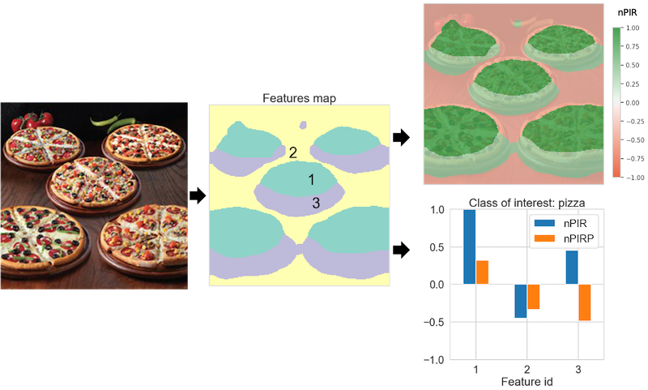
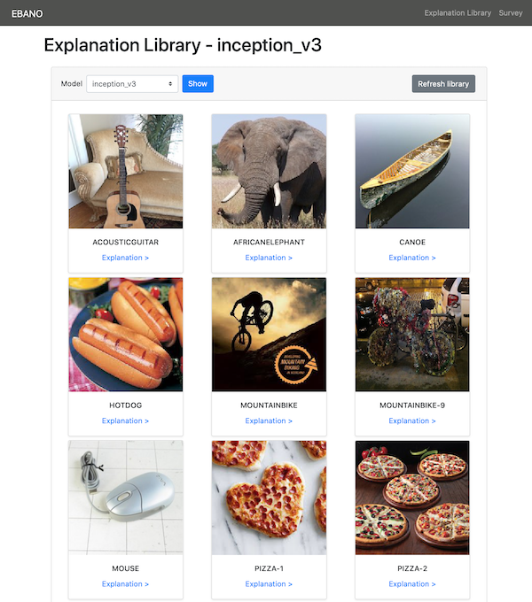
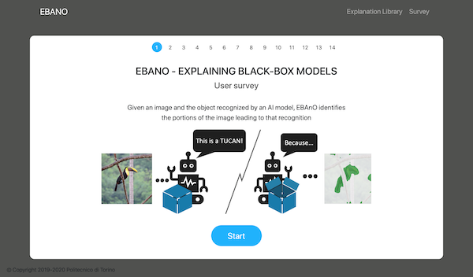

EBAnO-Ecosystem
EBAnO (Explaining BlAck-box mOdels) is a wide research project focused on the explanation of Artificial Intelligence (xAI) models.
EBAnO Express
EBAnO Express is a simple and reliable explanation tool that can be used to deeply understand the reasons behind every prediction made by DCNN.
The current implementation supports DCNN developed with Keras.
Check out EBAnO Express on the GitHub repo.

Explanation Library
It is available online a library of explanation produced with EBAnO analyzing four different DCNN models:
- VGG 16
- VGG 19
- Inception V3
- Inception ResNet V2
The explanation library is available at: EBAnO Explanation Library

EBAnO Survey
A survey regarding the quality and the simplicity of understanding of the explanations produced by EBAnO is available at the following link: EBAnO Survey
